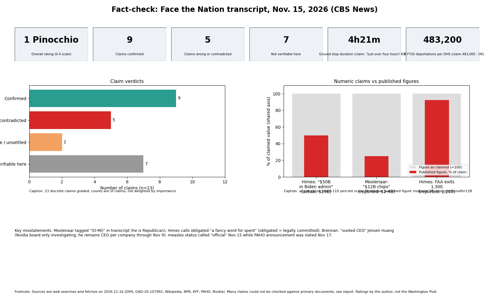

The transcript earns 1 Pinocchio. Of 23 claims graded, 9 were confirmed against primary or authoritative sources, 5 were wrong or contradicted, 2 were premature, and 7 could not be checked here. The host's factual framing mostly holds: the ground stop (4h21m on Nov. 13), the $12.5B and $50B figures, the verbatim GAO quote, ICE's 483,200 FY2026 deportations and Miller's promotion all check out.
Answer: see the table. Key Values: n=23 claims; period Nov. 2026 unless stated. Confidence: medium; web search only, several secondary sources, primary documents obtained for GAO, DHS, CRS, Nvidia.
| Claim | Verdict | Evidence (figures, period) | Source |
|---|---|---|---|
| Ground stop lasted just over four hours; 1,900+ flights canceled by Sunday | Confirmed | Wikipedia: 15:54-20:15 EST (4h21m); 2,100 canceled Nov 15 per FlightAware | Wikipedia 2026 FAA nationwide ground stop |
| Copper-to-fiber install at El Dorado, AR router flooded network; L3Harris is telecom contractor | Confirmed (root cause still open) | Wikipedia/WSJ: remote southern Arkansas facility, L3Harris Cisco routers; Administrator Bedford says cause not fully explained. Amarillo detail not independently found | Wikipedia; NPR (fetch timed out, headline only) |
| Congress gave $12.5B in One Big Beautiful Bill | Confirmed | CRS: $12.52B for facilities and equipment | everycrsreport.com R48585 |
| $50B total ask | Confirmed | Duffy and Mullin requested $50B; Duffy lobbied $30B on Nov 12 | Wikipedia |
| GAO: FAA "buying delivery speed at the risk of cost uncertainty and potential disruptions" | Confirmed | GAO-26-107992, Sept 14, 2026, verbatim | gao.gov/products/gao-26-107992 |
| 2021 law gave $25B (Brennan) | Confirmed | IIJA: $25B over FY22-26, $5B of it for ATC facilities | CRS R48585 |
| ICE deported just over 483,000 in FY2026 | Confirmed, with caveat | DHS release Nov 12: 483,200 vs 442,640 in FY25. Release does not define whether voluntary departures are included; one outlet says non-removal categories are counted. Earlier ICE workbook showed 356,389 removals through July 11 | dhs.gov release 2026-11-12 |
| Stephen Miller just finished first week as chief of staff | Confirmed | Announced Nov 6, effective Monday Nov 9, replacing Wiles | baynews9, NBC stations |
| Heidi Overton is FDA commissioner nominee | Confirmed | Nominated Aug 19, 2026 | AP/PBS |
| Rubio spring memo said Alice Huang a spy; Megaspeed is Singapore firm | Confirmed as reported | NYT-sourced reports Nov 6-8; no official confirmation. Brennan's CBS/CNN attributions not independently reached | aiweekly.co, dnyuz.com |
| Himes: $50B sent in Biden administration | Wrong | IIJA was $25B (Brennan said so earlier in the same segment) | CRS R48585 |
| Himes: obligated is "a fancy D.C. word for spent" | Misleading | Obligated means legally committed by contract; outlays come later. Duffy said radar is obligated, not spent, and deliveries start spring 2027 | Duffy transcript; standard federal budget terminology |
| Moolenaar labeled "(D-MI)" | Wrong (transcript label) | Moolenaar is a Republican; Brennan herself says Republican in the intro | Same transcript |
| Moolenaar: Megaspeed accessed over $12 billion of chips | Contradicted by public reporting | Reports put purchases at roughly $2B (Reuters/NYT-derived) to over $4B (analyst estimate). No source for $12B found; he may cite non-public information | implicator.ai, aphnetworks, fourweekmba |
| Himes: 1,300 FAA employees resigned or retired from DOGE; 400 probationary fired | Partly unmatched | 400 probationary: supported (Washington Post May 2025). Departures: WSJ 1,200+ (May 2025); Politico 2,080 deferred resignations by July. 1,300 not found | aviationpros.com, Politico, WaPo |
| Brennan: Jensen Huang, the "ousted" Nvidia CEO | Premature or wrong | Board opened an investigation Nov 8; company says he continues as CEO. No removal report found through Nov 9; Nov 10-15 not confirmed | investor.nvidia.com statement; Fortune Nov 9 |
| Measles elimination status "now official" | Premature | PAHO commission met Nov 10-13; KFF reports loss from unnamed researchers; PAHO announcement slated Nov 17 | npr.org Nov 14, wisconsinexaminer.com |
| Trilateral Trump-Xi-Putin meeting expected Thursday | Unsettled | Putin and Trump open to it; China has not confirmed. APEC Shenzhen Nov 18-19 | newstribune.com, scmp.com |
| Aug 2025 15% revenue share; Trump raised to 25% | Not verified this session | Background recollection only | none |
| CBS exit poll 58% enforcement too far; CBS July analysis of ICE arrests | Not checkable here | CBS internal polling; not located | none |
| ICE told to make about 19,000 arrests per week | Not checkable here | Not in DHS release | DHS release |
| Duffy: 70% copper-to-fiber done; ~470 radios switched | Not checkable here | No FAA data found | none |
| Himes: Huang wrote $25M checks for ballroom | Not checkable here | Not searched to completion | none |
| Bessent: 1% of chips imported to Singapore stayed; Singapore 20% of Nvidia sales; Commerce has the pen | Not checkable here | Only the Bessent-Lutnick Entity List dispute reports found | aiweekly.co, magica.com |
| RFK Jr. quote, Social Security insolvent in six years, Himes/Cassidy working-day counts | Not checkable here | Trustees report and quote video not retrieved | none |
Answer: 1 Pinocchio (mostly accurate, some errors). The host's statements are largely sound; errors are concentrated in guest remarks. Key Values: 9 confirmed, 5 wrong, 2 premature, 7 unchecked. Confidence: medium, since unchecked claims could move it either way. Ratings are mine, not the Washington Post's.
Confidence: medium.
Search was web-only; no credentialed sources used.